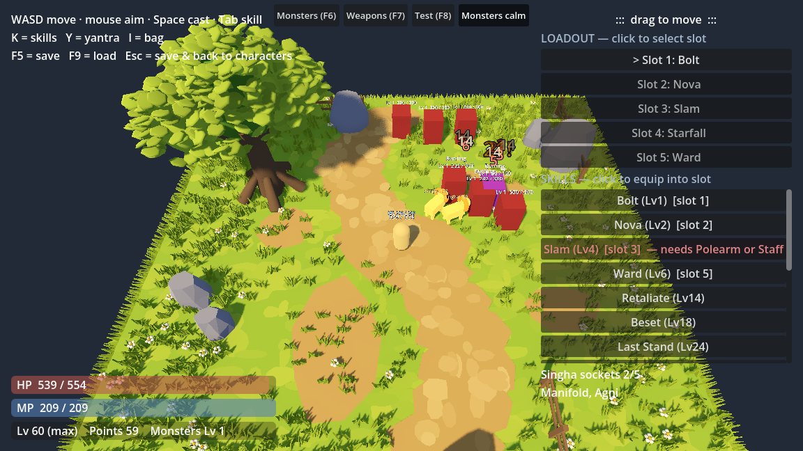
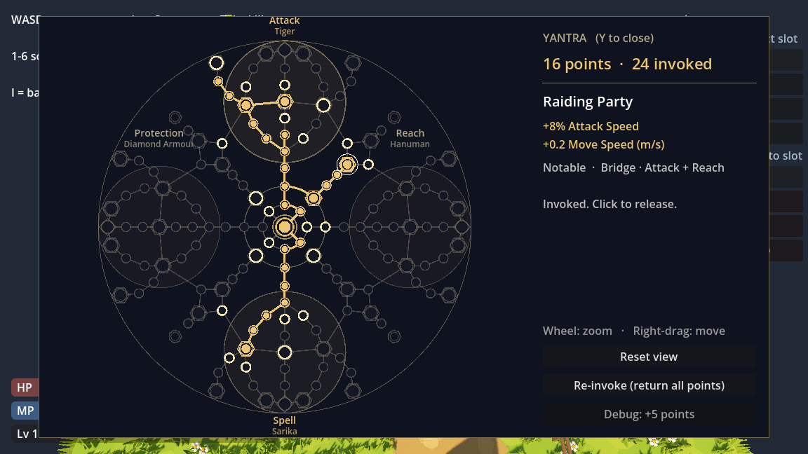
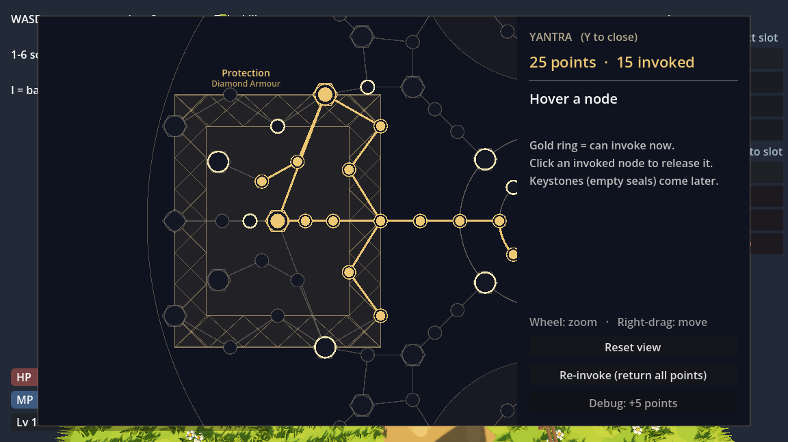
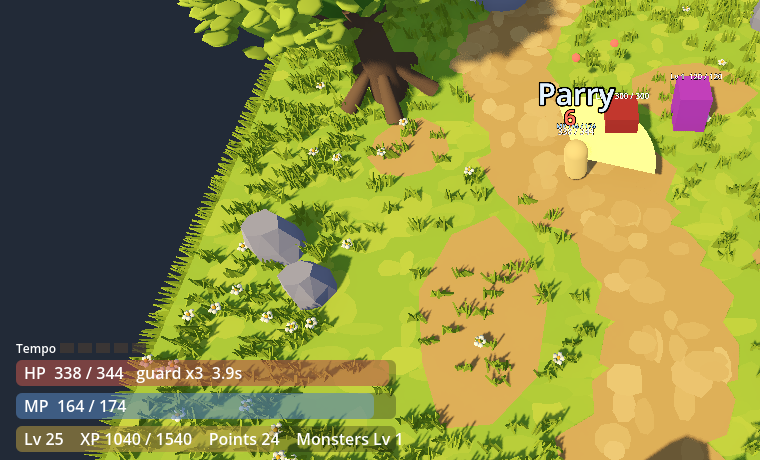
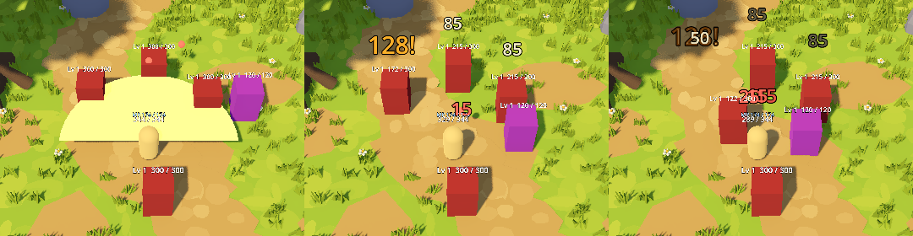

A no-windup kick for any weapon: the nearest enemy in front is shoved 4.5 m back. Kick it into another enemy or a wall for extra damage — a wall stuns it. Kick a boss and you're the one who bounces back.
ถีบศัตรูไปชนตัวอื่นKicking an enemy into anotherถีบแล้วได้ Tempo 1 แต้มA landed kick gives 1 Tempo
Starfall (a fan of star shards), Asani (lightning where you aim), Naga Coil (a slowing coil that follows you), Nagapasha (a serpent noose for whoever crosses it), Chakra (orbiting discs that fly at enemies), Unbinding Wave (switches monster mods off), Astra Blade (your weapon draws on Spell Power) and Deva Lamp (a light that restores mana and speeds you up).
A spirit lion fights beside you until it's killed. It bites with your katha (Agni sets enemies burning), monsters can shoot it, and Manifold calls two.

สิงห์ (สีเหลือง) กลางฝูงมอนสเตอร์Singha (yellow) in a pack
A 148-node passive tree laid out like Thai yantras — a central seal with tiger, Hanuman, Sarika and diamond-armour yantras joined by bridges. A yantra here is invoked, not tattooed, so you can re-invoke a different path whenever you like.

ภาพรวมผังยันต์The whole tree

ยันต์เกราะเพชร วาดตามแบบยันต์ผ้าจริงDiamond-armour yantra, drawn like the real cloth yantra
Four weapon types — sword, polearm, bow, staff — plus an off-hand slot (shield, mid mo, or a second sword). Each has its own skills, 17 in all: Crossed Daab (an X-cut with two swords), Ngao Sweep (a wide polearm arc), Tracking Arrow (curves to the nearest enemy) and more. A Tempo meter is filled by some skills and spent by others, and Parry and Riposte guards and counter-cuts with no timing needed.

Parry and RiposteParry and Riposte

Ngao Sweep, Hook and Drag, Shield Bash, Whirling DaabNgao Sweep, Hook and Drag, Shield Bash, Whirling Daab
อื่น ๆ สัปดาห์นี้
Also this week
มอนสเตอร์มีเลเวล และมีระดับ Enchanted / Charmed ที่ HP เยอะกว่าและมีพลังพิเศษ เช่น Frenzied, Volley, Death Burst
แยก Attack Power กับ Spell Power: อาวุธเสริมท่าโจมตี ส่วนไม้เท้ากับยันต์เสริมเวท
Monster levels, plus Enchanted / Charmed tiers with more HP and dangerous mods like Frenzied, Volley and Death Burst.
Attack Power and Spell Power split: weapons power attacks; staves and the yantra power spells.
Critical hits, attack/cast speed, separate Attack / Spell Defence.
Five equipment slots, loot, a bag, and one save per character.
A steeper, further camera so you can see more around you.
2026 · W38 · 15 – 21 Sep
การต่อสู้ครั้งแรก
The first fight
จากกล่องทดลองมาเป็นสนามที่เล่นได้จริง: เดินด้วย WASD เล็งด้วยเมาส์ มีศัตรูที่วิ่งไล่และยิงกลับ มีมานา เลเวล และ XP สกิลแรกมีสี่ตัว ได้แก่ Bolt, Nova, Slam และ Ward
From test boxes to something playable: WASD to move, mouse to aim, enemies that chase and shoot back, mana, levels and XP. Four first skills: Bolt, Nova, Slam and Ward.
The core idea showed up right away: one katha means something different on each skill. Split gives Bolt more projectiles, Slam more pulses, and Ward more shield charges — and two katha together must visibly do both.
No characters or skills yet — this was groundwork. We picked Godot, built a tiny lab (a moving box and markers that expire), and exported a Windows build that actually runs, to prove the edit → look → export loop before building the real thing.